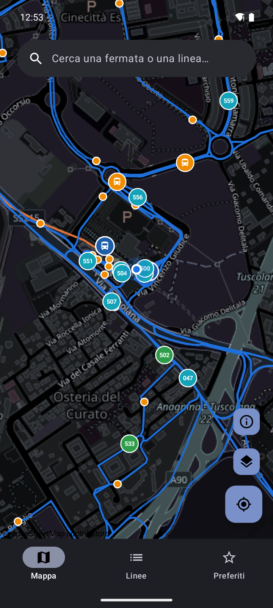
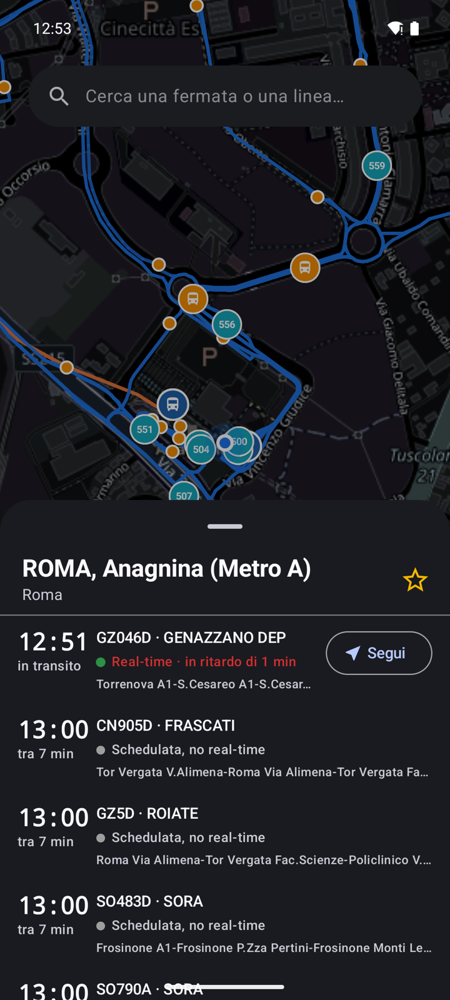
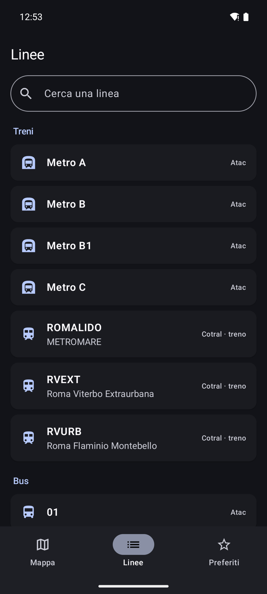

"Madovai" — ma dove vai? Ora anche su Android.
Cotral (bus e treni extraurbani) e Atac/Roma TPL (trasporto urbano di Roma) insieme, in tempo reale: posizione dei mezzi, orari, ritardi. App Android nativa, in Material You — niente account, niente configurazione, si apre e si usa.
Gratuita, open source, Android 8.0 o successivo. Si installa direttamente dal file APK, senza Play Store. Hai un iPhone? C'è la versione iOS.

Cosa fa
Madovai unisce due reti di trasporto che di solito vivono in due app diverse, e le mostra come se fossero una sola. Stessi dati e stesso comportamento dell'app iOS, riscritta da zero come app Android nativa.
Cotral (extraurbano, tutta la provincia) e Atac/Roma TPL (urbano) sulla stessa mappa, con fermate e percorsi delle linee disegnati sopra. Non devi cambiare app a seconda di dove ti trovi.
Vedi dove si trova davvero il tuo bus, tram o treno in questo momento, non solo l'orario a tabella. Tocca "Segui" e la mappa tiene d'occhio il mezzo per te.
"In ritardo di 4 min" o "in anticipo di 2 min", scritto in modo semplice. Quando il tempo reale non c'è, l'app lo dice e mostra l'orario programmato.
Metromare (Roma-Lido) e Roma-Viterbo, tratta urbana ed extraurbana: partenze e ritardi dal servizio orari di ASTRAL, con corse soppresse e bus sostitutivi segnalati.
Su Android 12 e successivi l'app prende i colori dal tuo sfondo (colori dinamici), con tema chiaro e scuro automatici. Sulle versioni precedenti usa il blu di Madovai.
La mappa usa OpenStreetMap tramite osmdroid: niente Google Maps, niente account Google, niente servizi Google Play necessari. Funziona anche su telefoni senza Play Store.
Tocca una fermata o un mezzo e si apre una scheda Material 3 dal basso con le prossime partenze: la tiri su per vedere tutto, la abbassi per tornare alla mappa.
Barra di navigazione con Mappa, Linee e Preferiti. Cerca una fermata o una linea per nome, salva quelle che usi ogni giorno e ritrovale con un tocco.
Come si presenta
Nessun account da creare, nessuna schermata di login: si apre l'app e si vede subito la mappa. I dati si scaricano in sottofondo al primo avvio, intanto la mappa è già utilizzabile.


Installazione
Madovai non è sul Play Store: si installa direttamente dal file APK. Su Android è una procedura normale — si fa una volta sola e ci vuole un minuto.
L'app è distribuita come file .apk (il formato delle app Android). Visto che non arriva da uno store, Android ti chiede un permesso in più la prima volta: è normale e non serve nessun root né nessuna app aggiuntiva.
Perché non il Play Store? Pubblicarci richiede un account sviluppatore Google Play e la verifica dell'identità presso Google. Non è escluso in futuro — per ora l'APK diretto è la via più semplice.
Aggiornamenti: quando esce una nuova versione, scarica il nuovo APK dalla pagina delle release e installalo sopra quello vecchio: preferiti e dati già scaricati restano.